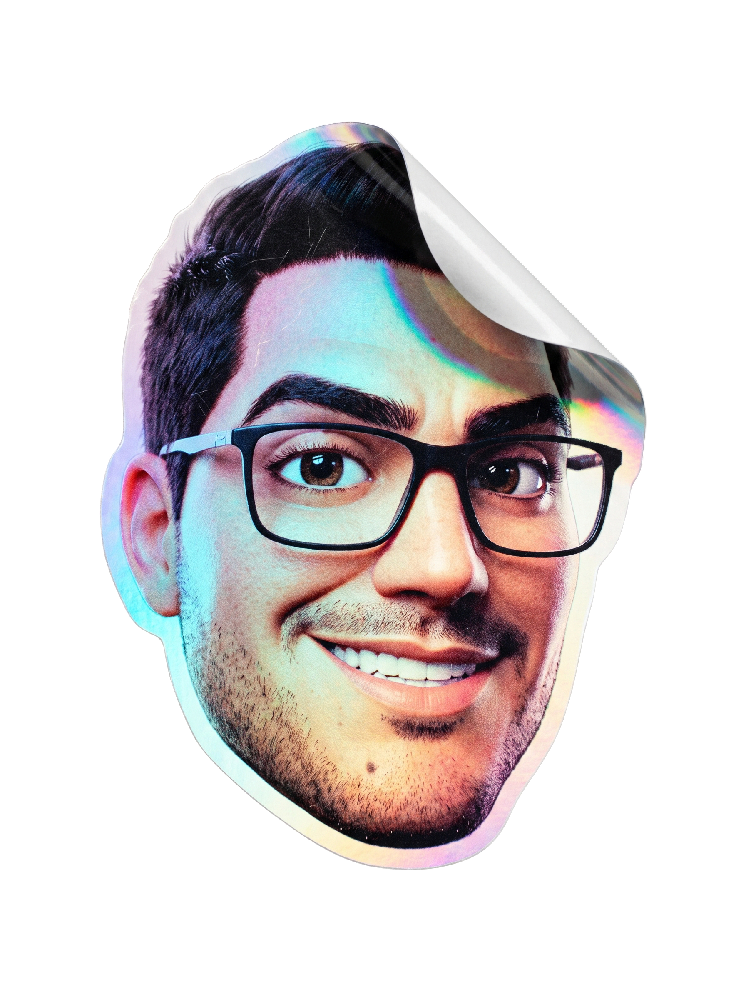
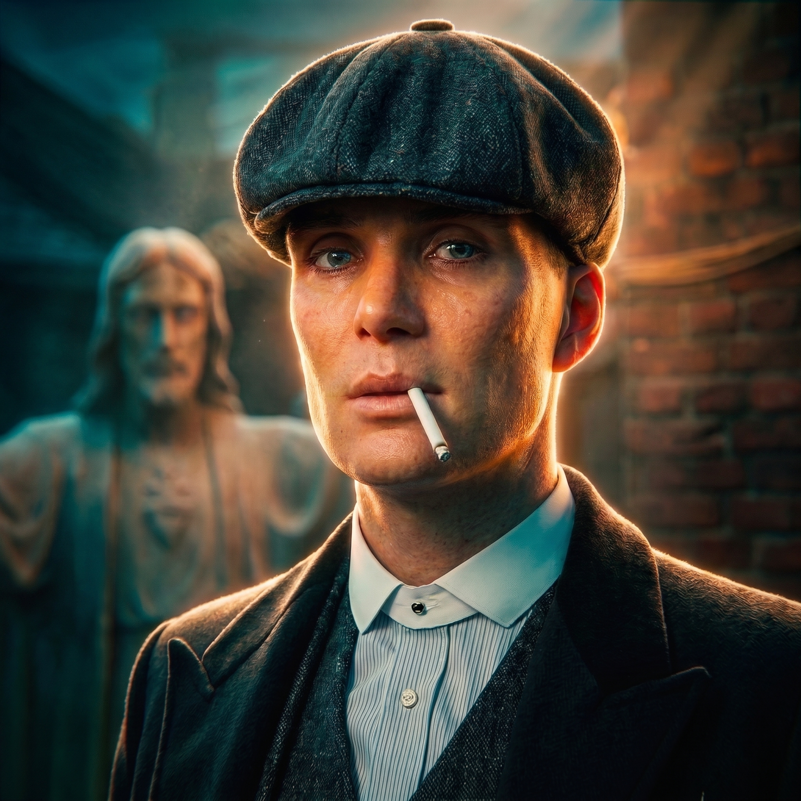
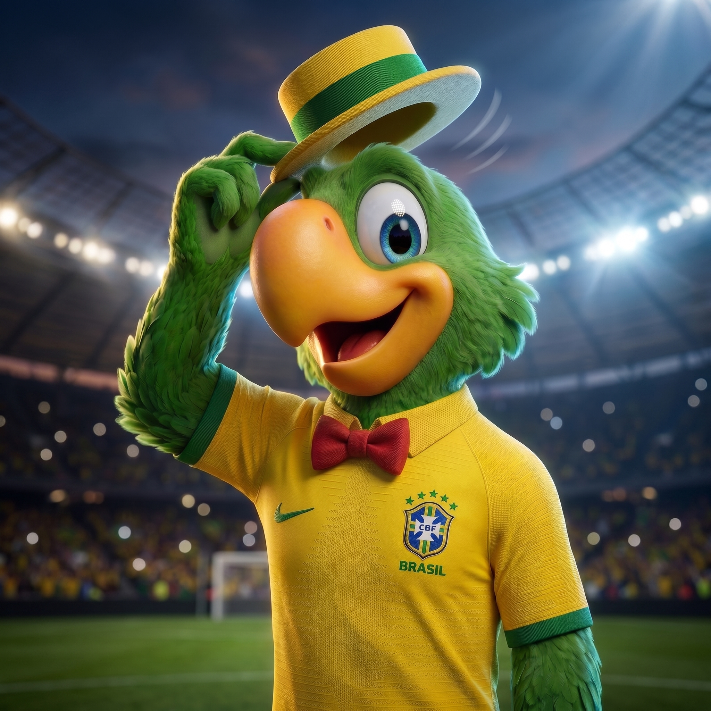

BandeiraPare de perder horas tentando fazer a IA acertar.
Use agentes especializados para transformar referências em imagens de alto impacto, com prompts mais precisos, acabamento profissional e muito menos retrabalho.
Escolha sua linguagem visual
Cada agente domina
uma especialidade.
Cada agente foi desenvolvido para dominar uma linguagem visual específica da interpretação da referência ao acabamento final.
Fotografia & campanha
ai.realistic
Cenas realistas com controle profissional de luz, textura, cenário e composição. Para quem precisa de imagem que pareça produzida não apenas gerada.

RAW / FINALFidelidade & estética cômica
ai.comic
Imagens fiéis à referência, preservando traços, composição e elementos essenciais, mas com uma estética cômica marcante e acabamento estilizado.
Personagem & identidade
ai.mascot
Personagens consistentes, expressivos e memoráveis para dar rosto a marcas, campanhas e universos visuais.

RAW / FINAL